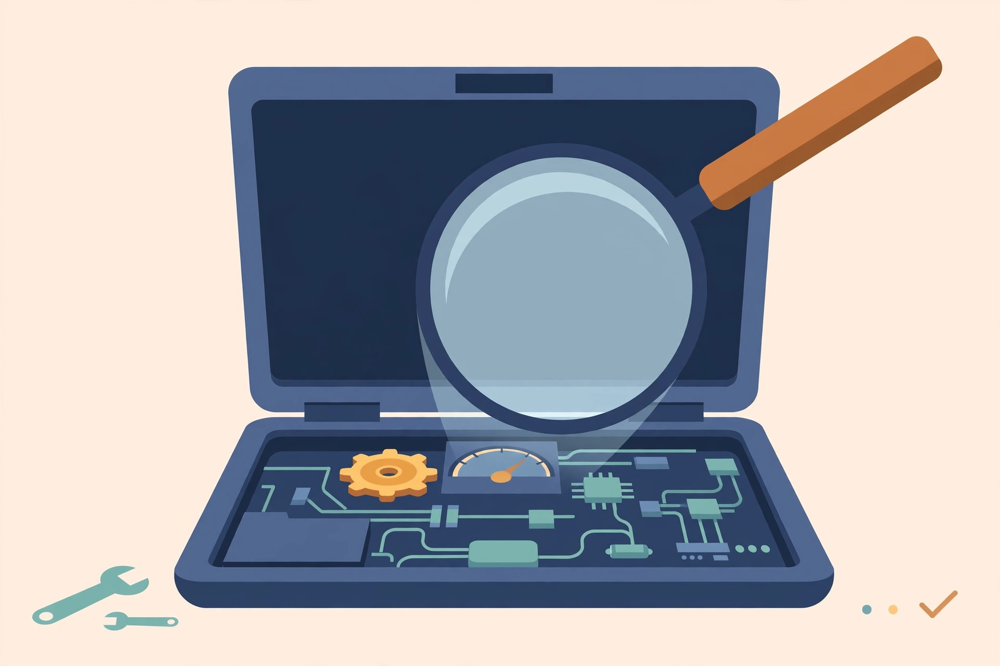

Diagnose why your laptop is slow: find the bottleneck before you spend

Most slow-laptop advice is a list of fixes with no diagnosis in front of it: free up space, disable startup programs, scan for malware, buy an SSD, add RAM. Each fix is right for somebody — and useless for everybody else. Applying them in random order wastes an afternoon, and buying parts before measuring wastes money. The better first step is fifteen minutes of looking at what the machine itself reports, because a slow laptop is almost always slow for one main reason, and the built-in tools will usually point straight at it.
Microsoft's own guidance names the usual suspects: too little RAM, accumulated junk and temporary files, too many background programs, a full hard drive, malware running quietly in the background, and outdated software and drivers. That list is a differential diagnosis, not a to-do list. The routine below tests them in an order that separates the causes quickly.
Sudden or gradual? The first fork
Start with one question: did the laptop get slow gradually over months, or suddenly — fine last week, miserable today?
A gradual slowdown is the familiar accumulation story: startup programs piling up one install at a time, a drive filling toward the top, a mechanical hard drive aging. A sudden slowdown is a different animal. When a machine falls off a cliff, think of a runaway background process, a malware infection, a Windows update churning, or a drive beginning to fail. Microsoft's support community answers for sudden slowdowns reach for deeper tools first — Resource Monitor and a disk check — because the ordinary cleanup list does not explain a cliff. Keep your pattern in mind as you run the routine; it changes which result matters most.
The 15-minute diagnostic routine
Work through these steps in order, and write down what each one shows before moving on. Diagnosis is just notes, taken in the right order.
- Reproduce the slowness, then open Task Manager (Ctrl + Shift + Esc). Use the laptop the way that feels slow — opening programs, switching between them — while you watch the Performance view. One of the three main graphs will be working hardest, and that pattern is the core evidence.
- Read the pattern. If the Disk graph stays pinned at or near the top during simple tasks, the drive cannot keep up. If Memory stays crowded with only a few programs open, the machine is short on RAM and is swapping work to the much slower disk. If the CPU stays high while you are barely doing anything, one specific process is the problem — switch to the Processes view, sort by CPU, and name it.
- Check the Startup view and use the numbers. Task Manager labels each startup program's impact, and Microsoft defines the labels by measured cost: Low is under 300 milliseconds of CPU time and under 292 KB of disk use at startup; High is over 1 second of CPU or over 3 MB of disk. A long list of High-impact entries explains a laptop that takes forever to become usable after sign-in — a boot problem, distinct from slowness while working.
- Check free space. Open Settings > System > Storage. Microsoft treats the drive as in a low-space state when that page's capacity bar turns red. A nearly full drive and a struggling drive produce similar symptoms, and this check costs ten seconds.
- Run a malware scan. Microsoft lists malware among the standard causes, and its built-in Defender can run routine scans. An unexpected result here reorders everything else on this page.
- If Task Manager looks normal but the machine is still slow, open Resource Monitor (search for it by name). It shows CPU, memory, disk, and network use in more detail than Task Manager — Microsoft's Q&A answers recommend it precisely for the "everything looks fine but it isn't" case. Sustained heavy disk activity with no obvious program behind it is the pattern that points at the drive itself.
Reading the results: symptom to bottleneck
| What you saw | Likely bottleneck | First move |
|---|---|---|
| Disk pinned during simple tasks; slow boot and program launches | Mechanical hard drive at its limit, or a drive starting to fail | Drive-health check below; if healthy, an SSD is the fix that matches |
| Memory crowded with a few programs open; worse with many browser tabs | Not enough RAM — the system swaps to disk | Check what the machine can take, then a RAM upgrade |
| CPU high at idle; one named process at the top | A runaway background program, updater, or sync tool | Update, reconfigure, or remove that program; scan for malware |
| Many High-impact startup entries; fine once settled, awful for minutes after sign-in | Startup overload | Disable the High entries you do not need at sign-in — it does not uninstall them |
| Storage bar red; everything sluggish | Drive nearly full | Free space first, then re-measure before buying anything |
| Fans loud under light work; speed comes and goes in waves | Heat — the processor slows itself to protect itself | Cooling and dust work, per the battery and cooling guide |
Two cautions about the startup step. Disabling a startup program does not uninstall it — the change is reversible, and anything can be switched back on. And do not disable by label alone: security software and driver-related entries may genuinely be needed at sign-in. Disable the High-impact entries you recognise and do not need immediately; leave the ones you cannot identify until you have looked them up.
When the drive itself is failing
One branch of the diagnosis outranks all the others. A mechanical drive that is wearing out — or any drive with file-system damage — can present as general slowness long before it fails outright, and it changes the job from "speed up" to "protect the data first." There is real value in keeping an ear and an eye on drive health over a machine's life: older spinning drives often announced trouble audibly, while SSDs fail silently, which makes the software checks below the only warning you get.
- Back up now, before any diagnostic that stresses the drive. If the drive is dying, the backup is the task; the diagnosis can wait.
- Run chkdsk. Open Command Prompt as administrator
and run
chkdsk /f. Per Microsoft's documentation, chkdsk scans the file system and its metadata for logical and physical errors and can fix what it finds. - Do not interrupt it. Microsoft's guidance is explicit: do not cancel or interrupt a running chkdsk. Let it finish, note what it reports, and treat recurring errors as a replacement decision, not a cleanup task.
What success looks like
Success is not a faster laptop — not yet. Success is a sentence you can say with evidence: "the disk is pinned at 100% during ordinary tasks while CPU and memory sit low, so the drive is the bottleneck." Or: "boot takes minutes, but the machine is fine afterwards and the Startup view shows six High-impact entries." Each sentence names one fix, in the right order, and rules out the parts you do not need to buy. That is the whole point of diagnosing first: every guide on this site works better when it is aimed at the bottleneck you actually measured.
Next step for the free fixes: the no-parts Windows cleanup →